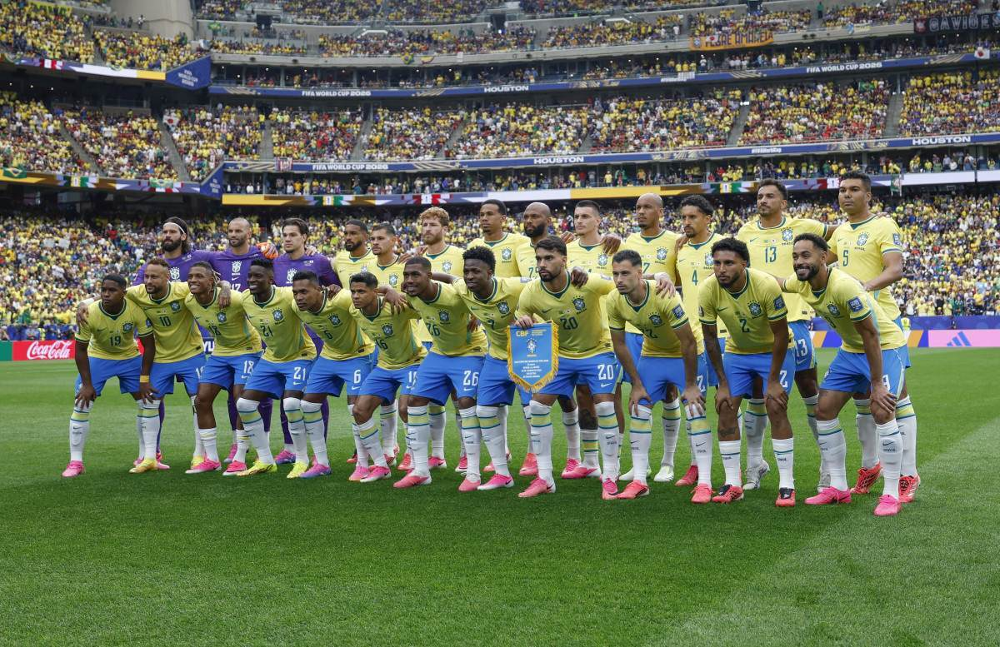

O Brasil ficou no Grupo C, ao lado de Marrocos, Haiti e Escócia. A seleção, comandada por Carlo Ancelotti, terminou a primeira fase em primeiro lugar, com 7 pontos
O Brasil terminou o torneio na 11ª colocação entre as 48 seleções. È o pior resultado do país desde 1966, quando também ficou em 11º.
A Noruega, que eliminou o Brasil, terminou a Copa em 5º lugar- a melhor campanha da história da seleção norueguesa.
Para saber mais sobre o torneio, visite o site oficial da FiFA.
Página produzida na aula de programação web - Semana 2.